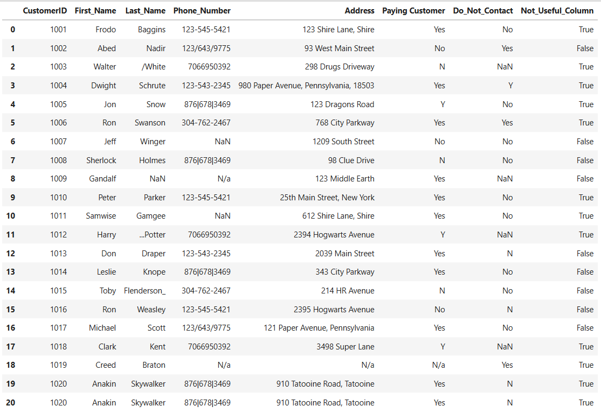
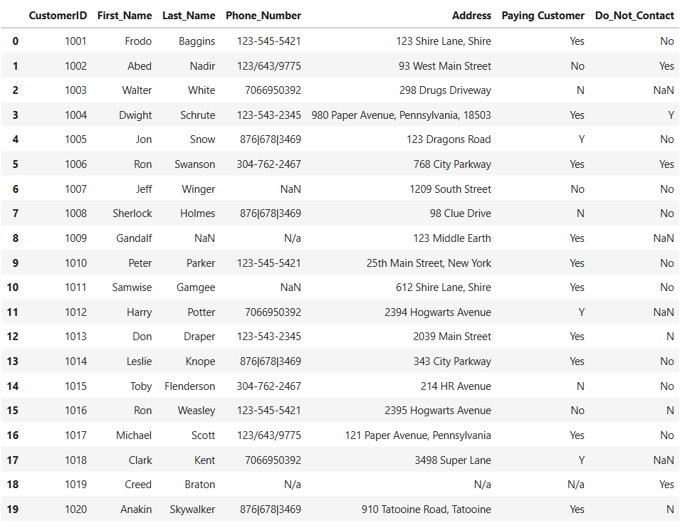
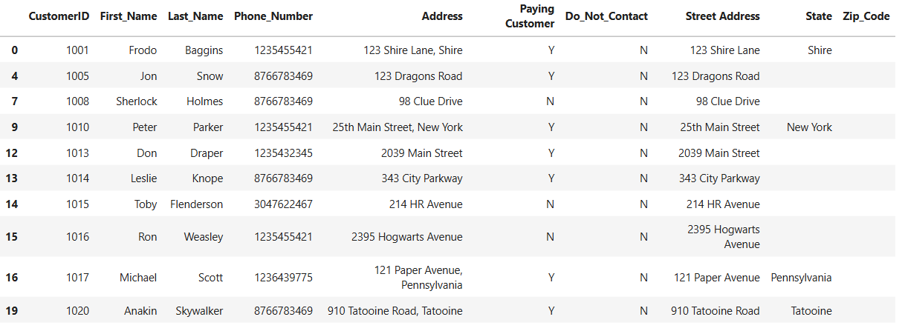
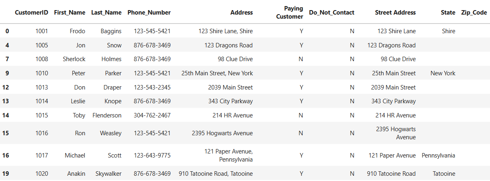
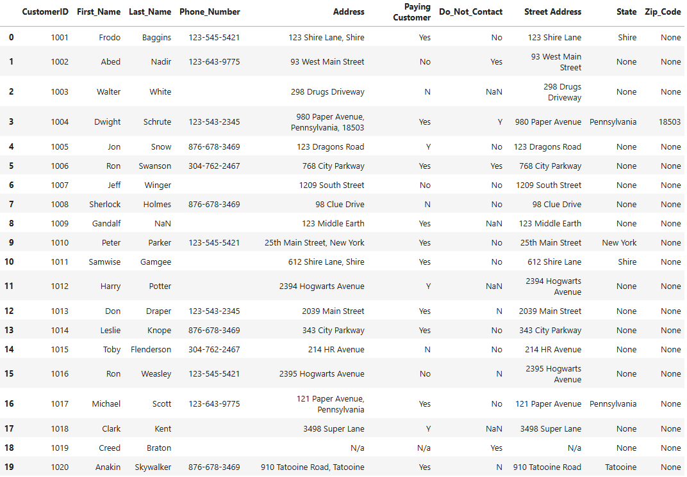
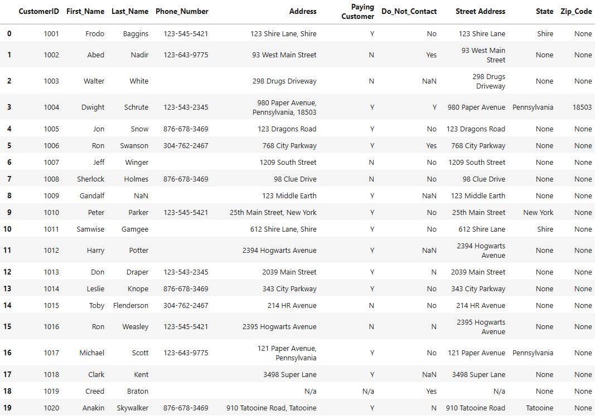
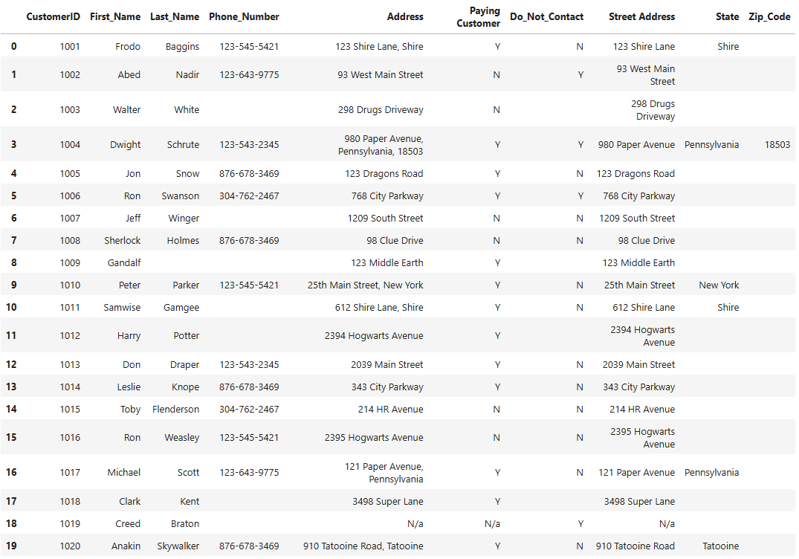
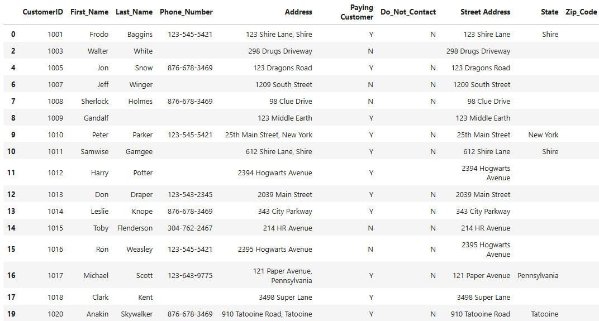
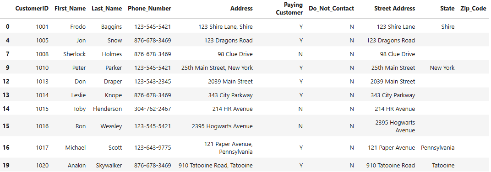
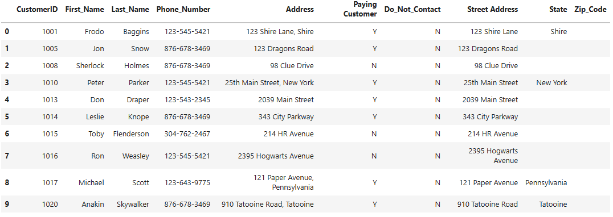

Overview
Introduction
This project focuses on cleaning and preprocessing a customer call list dataset using Python and pandas. Guided by tutorials from Alex The Analyst, it emphasizes transforming messy raw data into a clean, structured format ready for analysis or operational use.
Key tasks included removing duplicates, correcting text values, standardizing phone numbers, handling missing data, and splitting address information. I earned a Python certification from Kaggle while completing this project.
Problem Statement
The Ask
The dataset contained inconsistencies, missing values, and formatting issues that made it unreliable for customer outreach. The objectives were:
- Remove duplicates and unnecessary columns
- Standardize customer names, phone numbers, and address fields
- Handle missing values appropriately
- Filter out customers who requested not to be contacted
- Produce a clean, analysis-ready dataset
Methodology
Process
Load the Dataset
Import pandas and load the Excel file containing the customer call list.
import pandas as pd
df = pd.read_excel("Customer Call List.xlsx")
df
Remove Duplicates
Drop any duplicate rows to ensure every customer record is unique.
df = df.drop_duplicates()
dfRemove Irrelevant Columns
Drop columns that serve no analytical purpose to reduce dataset noise.
df = df.drop(columns = "Not_Useful_Column")
dfClean & Standardize Names
Strip stray characters like numbers, dots, slashes, and underscores from Last_Name entries.
df["Last_Name"] = df["Last_Name"].str.strip("123._/")
df
Standardize Phone Numbers
Strip all special characters, cast to string, reformat to 000-000-0000, then clear invalid entries.
Remove special characters
df["Phone_Number"] = df["Phone_Number"].str.replace('[^a-zA-Z0-9]', '', regex=True)Convert to string
df["Phone_Number"] = df["Phone_Number"].apply(lambda x: str(x))
Format as 000-000-0000
df["Phone_Number"] = df["Phone_Number"].apply(
lambda x: x[0:3] + '-' + x[3:6] + '-' + x[6:10]
)Remove blank phone numbers
df["Phone_Number"] = df["Phone_Number"].replace(['nan--', 'Na--'], '')
df
Split Address Into Structured Fields
Expand the single Address column into separate Street Address, State, and Zip Code columns using comma as the delimiter.
df[["Street Address", "State", "Zip_Code"]] = \
df["Address"].str.split(',', n=2, expand=True)
df
Standardize Categorical Values
Normalize "Yes"/"No" values to "Y"/"N" in the Paying Customer and Do_Not_Contact columns for consistency.
df["Paying Customer"] = df["Paying Customer"].replace({'Yes': 'Y', 'No': 'N'})
df["Do_Not_Contact"] = df["Do_Not_Contact"].replace({'Yes': 'Y', 'No': 'N'})
df
Handle Missing Values
Replace all remaining NaN values with empty strings to prevent errors during downstream analysis.
df = df.fillna('')
df
Filter Do-Not-Contact Customers
Remove any records where the customer opted out of being contacted.
df = df[df["Do_Not_Contact"] != 'Y']
df
Remove Rows With Blank Phone Numbers
Drop any remaining records where phone numbers are empty — contacts must be reachable.
df = df[df["Phone_Number"] != '']
df
Reset Index
Reset the DataFrame index to be sequential after all filtering operations.
df.reset_index(drop=True, inplace=True)
df
Outcome
Results
The final dataset was clean, structured, and fully ready for analysis or operational use:
- Duplicate and irrelevant data removed entirely
- Consistent formatting applied to names, phone numbers, and addresses
- Missing or inconsistent values handled without data loss
- Dataset filtered to only contactable, eligible customers
- Sequential index restored for clean referencing
Best Practices
Recommendations
💡 For Future Projects
- Implement automated data validation to catch formatting errors at the source
- Standardize text and numeric fields during data entry to minimize manual cleaning
- Maintain a consistent customer contact policy to avoid unnecessary removals
- Document cleaning procedures for reproducibility and team collaboration